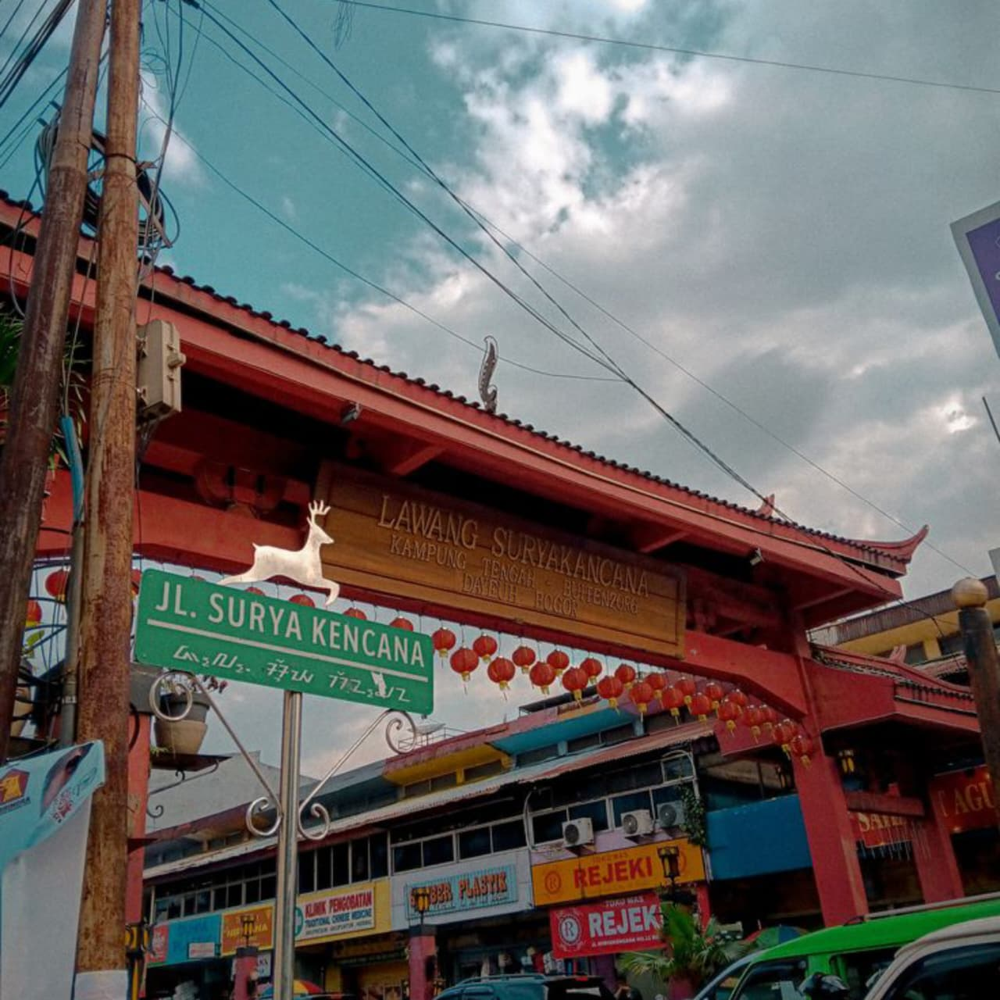
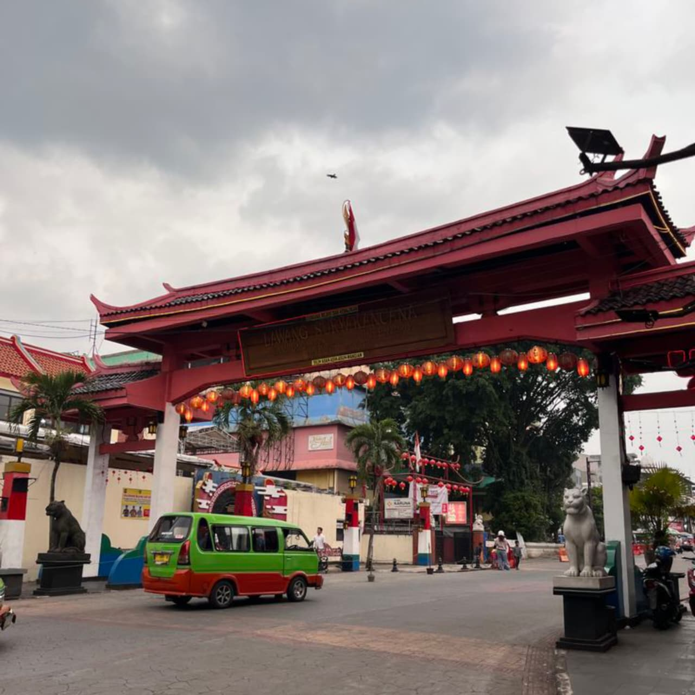
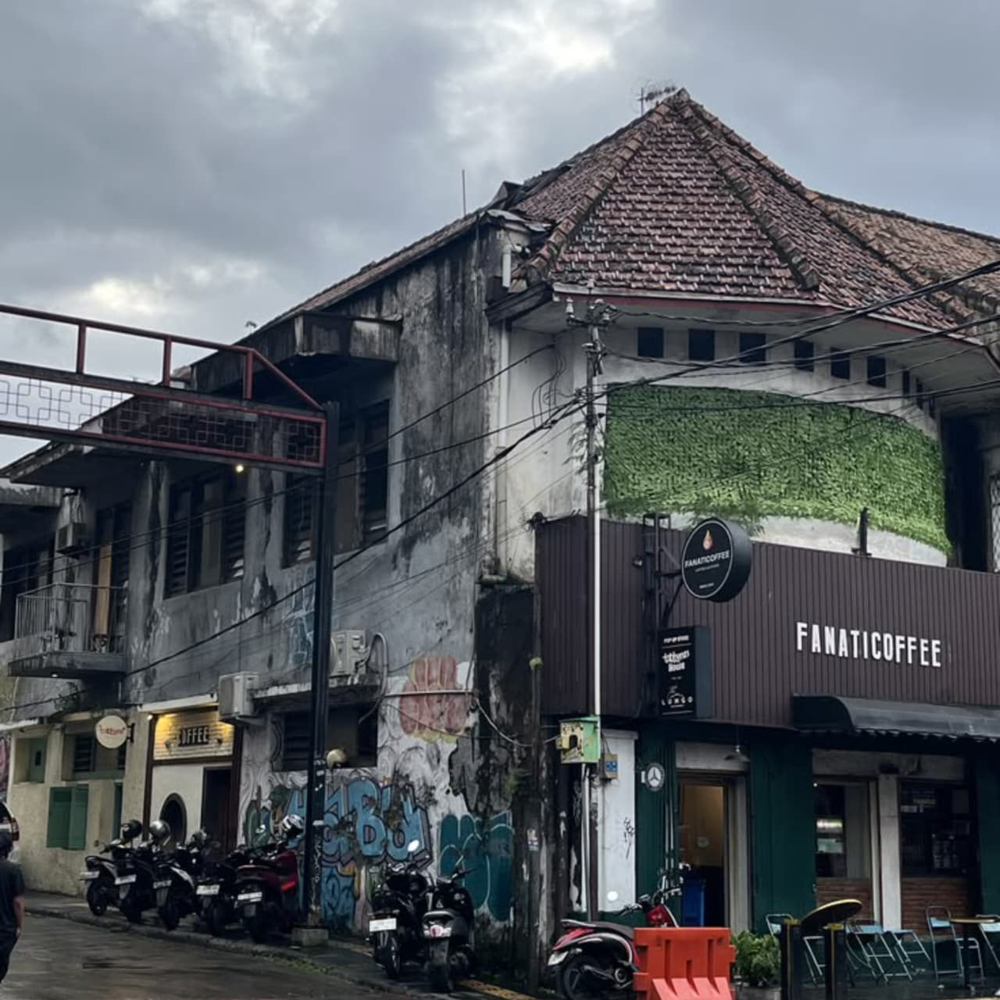

SurkenBot



Surya Kencana merupakan salah satu kawasan paling bersejarah sekaligus pusat kuliner yang paling dikenal di Kota Bogor, Jawa Barat. Terletak di Kecamatan Bogor Tengah, Jalan Surya Kencana telah menjadi bagian penting dari perkembangan Kota Bogor selama ratusan tahun. Kawasan ini tidak hanya dikenal sebagai destinasi wisata kuliner, tetapi juga sebagai pusat perdagangan, budaya, dan sejarah yang masih mempertahankan identitasnya hingga saat ini.
Secara historis, kawasan Surya Kencana merupakan bagian dari kawasan Pecinan Bogor yang telah berkembang sejak masa kolonial Belanda. Pada masa itu, kawasan ini menjadi pusat aktivitas ekonomi masyarakat, khususnya komunitas Tionghoa yang berperan penting dalam perkembangan perdagangan di Kota Bogor. Seiring berjalannya waktu, kawasan ini terus berkembang tanpa meninggalkan karakter budaya dan sejarahnya.
Keunikan Surya Kencana terletak pada perpaduan budaya yang tercermin dalam kehidupan masyarakatnya. Berbagai tradisi dari budaya Sunda, Tionghoa, dan budaya Nusantara lainnya hidup berdampingan secara harmonis. Hal tersebut dapat dilihat dari keberadaan rumah ibadah, bangunan berarsitektur khas Tionghoa dan kolonial, pasar tradisional, serta beragam jenis usaha yang masih mempertahankan ciri khasnya.
Salah satu daya tarik utama Surya Kencana adalah kekayaan kulinernya. Kawasan ini dikenal sebagai surga kuliner karena menawarkan berbagai pilihan makanan yang sangat beragam, mulai dari makanan khas Bogor, masakan Tionghoa, hidangan Nusantara, makanan tradisional, hingga kuliner modern. Pengunjung dapat menemukan berbagai makanan legendaris yang telah bertahan selama puluhan tahun dengan cita rasa yang tetap terjaga.
Lokasi Surya Kencana yang berada di pusat Kota Bogor membuat kawasan ini sangat mudah dijangkau. Kawasan ini berada tidak jauh dari berbagai destinasi wisata terkenal seperti Kebun Raya Bogor, Istana Bogor, Pasar Bogor, dan Alun-Alun Kota Bogor. Letaknya yang strategis menjadikan Surya Kencana sering menjadi tujuan utama wisatawan setelah mengunjungi objek wisata di sekitarnya.
Dengan kekayaan sejarah, keberagaman budaya, kelezatan kuliner, lokasi yang strategis, serta suasana yang khas, Surya Kencana tidak hanya menjadi pusat kuliner semata, tetapi juga menjadi representasi dari perjalanan sejarah dan perkembangan Kota Bogor. Kawasan ini berhasil mempertahankan nilai-nilai tradisional di tengah perkembangan zaman, sehingga tetap menjadi salah satu destinasi wisata yang memiliki daya tarik tinggi.
Klik peta di atas untuk melihat rute langsung ke kawasan kuliner Suryakencana melalui Google Maps.
Kawasan Surya Kencana dikenal sebagai pusat wisata kuliner legendaris di Kota Bogor. Berbagai makanan khas Bogor, kuliner tradisional, hingga hidangan khas Tionghoa dapat ditemukan di sepanjang jalan ini. Sebagian besar tempat makan telah berdiri selama puluhan tahun dan tetap mempertahankan cita rasa autentiknya. Berikut beberapa kuliner yang paling populer dan banyak direkomendasikan ketika berkunjung ke Surya Kencana.
1. Soto Kuning Pak Yusup
Ciri khasnya terletak pada kuah santan berwarna kuning yang kaya akan rempah-rempah. Pilihan daging sapi meliputi daging, kikil, babat, paru, usus, hingga otak.
Menu andalan : Soto Kuning Daging Sapi | Harga : Rp35rb–Rp50rb | Jam : 08.00–17.00 WIB
2. Lumpia Basah Surya Kencana
Jajanan khas Bogor dengan rasa manis, gurih, dan sedikit pedas. Berisi rebung segar, bengkuang, telur, tahu, tauge, dan bumbu khas dalam kulit lumpia lembut.
Menu andalan : Lumpia Basah Original | Harga : Rp15rb–Rp25rb | Jam : 10.00–21.00 WIB
3. Ngo Hiang Gang Aut
Kuliner legendaris Tionghoa berupa campuran daging berbumbu yang dibungkus kulit tahu, digoreng renyah, disajikan dengan acar dan saus khas.
Menu andalan : Ngo Hiang Komplit | Harga : Rp30rb–Rp60rb | Jam : 09.00–17.00 WIB
4. Laksa Bogor Pak Inin
Kuah santan kental dengan rempah pilihan, berisi ketupat, bihun, tauge, tahu kuning, telur rebus, dan oncom.
Menu andalan : Laksa Bogor Original | Harga : Rp20rb–Rp35rb | Jam : 09.00–16.00 WIB
5. Toge Goreng Pak Gebro
Hidangan tauge segar, mie kuning, tahu, dan lontong yang disiram kuah tauco dan oncom yang gurih, manis, dan sedikit asam.
Menu andalan : Toge Goreng Komplit | Harga : Rp15rb–Rp25rb | Jam : 09.00–17.00 WIB
6. Asinan Jagung Bakar Asli Gang Aut
Perpaduan rasa segar, manis, asam, dan pedas. Tersedia asinan buah/sayur dan jagung bakar yang populer.
Menu andalan : Asinan Buah, Sayur, Jagung Bakar | Harga : Rp20rb–Rp35rb | Jam : 09.00–20.00 WIB
7. Martabak Air Mancur
Martabak legendaris dengan ukuran besar, adonan lembut, dan topping melimpah.
Menu andalan : Martabak Manis Cokelat Keju, Martabak Telur Spesial | Harga : Rp40rb–Rp80rb | Jam : 15.00–22.00 WIB
8. Cungkring Pak Jumat
Kikil, kulit, dan bagian kepala sapi yang direbus empuk, disajikan dengan lontong, tempe goreng, dan bumbu kacang.
Menu andalan : Cungkring Komplit | Harga : Rp20rb–Rp35rb | Jam : 07.00–14.00 WIB
9. Doclang Bogor
Kuliner tradisional dari lontong, kentang rebus, tahu goreng, dan telur dengan siraman bumbu kacang dan kecap manis.
Menu andalan : Doclang Original | Harga : Rp15rb–Rp25rb | Jam : 07.00–15.00 WIB
10. Es Pala Bogor
Minuman segar dari buah pala yang diolah menjadi manisan, disajikan dengan es batu dan sirup.
Menu andalan : Es Pala Original | Harga : Rp10rb–Rp20rb
Mengapa Kuliner Surya Kencana Istimewa?
Surya Kencana bukan sekadar tempat makan, melainkan pusat sejarah kuliner. Sebagian besar tempat makan di sini telah beroperasi puluhan tahun dengan resep asli lintas generasi. Perpaduan budaya Sunda, Tionghoa, dan Nusantara menciptakan pengalaman yang unik dan autentik di pusat Kota Bogor.